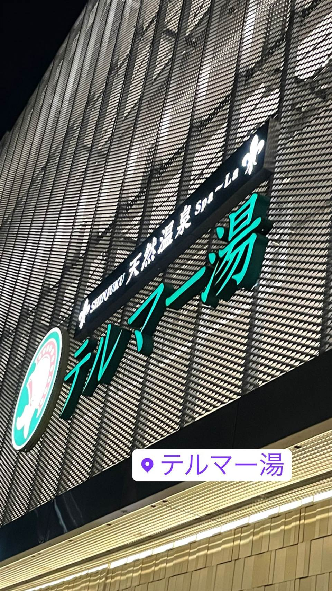

スーパー銭湯 · 仙川
天然温泉 仙川 湯けむりの里
メタケイ酸を豊富に含む天然温泉で「美肌の湯」、露天の岩風呂、1万冊超の漫画が読めるリクライニング席34席
仙川駅から徒歩5分のスーパー銭湯で、天然温泉は美肌の湯として知られるメタケイ酸を豊富に含む。1万冊以上の漫画が読めるリクライニングスペースも人気。
TRIVIA
豆知識
- 2000年開業
- メタケイ酸豊富で"美肌の湯"と呼ばれる
- 1万冊超の漫画が読めるリクライニング席あり
| 種類 | スーパー銭湯（天然温泉） |
|---|---|
| サウナ | 60〜89℃、90℃前後のタワー型サウナ |
| 水風呂 | 14〜17℃ |
| 料金 | 平日850円、土日祝950円（こども平日450円/休日500円）、温泉浴場は+700円 |
| 営業時間 | 10:00〜24:00（最終受付23:30）、年中無休 |
| 場所 | 京王線 仙川駅（徒歩5分） 東京都調布市若葉町2-11-2 |
| 注意 | 温泉の館内掲示 |
FOOD
風呂上がりに歩いて行ける店


NEARBY
近い施設・同じ種類
-
 スーパー銭湯 東急田園都市線 青葉台駅・藤が丘駅、JR横浜線 十日市場駅（各駅から送迎バスあり）
ヨコヤマ ユーランド緑 八朔の湯
全館で「ナノ水」を使用、週替わりで男女入替の大浴場（和風はひのき風呂、洋風はジャグジー）、回転寿司やエステサロン、駐車場250台
大人880円
スーパー銭湯 東急田園都市線 青葉台駅・藤が丘駅、JR横浜線 十日市場駅（各駅から送迎バスあり）
ヨコヤマ ユーランド緑 八朔の湯
全館で「ナノ水」を使用、週替わりで男女入替の大浴場（和風はひのき風呂、洋風はジャグジー）、回転寿司やエステサロン、駐車場250台
大人880円
-

スーパー銭湯 六本木ヒルズから徒歩5分（六本木駅・広尾駅などが最寄り） テルマー湯 西麻布 六本木エリア最大級の温浴施設（人工温泉）、岩盤浴、フィットネス、個室仮眠、館内着・タオル込み サウナ 90℃ 水風呂 18℃ 3 -
 スーパー銭湯 JR両国駅（徒歩5分）／都営大江戸線両国駅A3・A4出口（徒歩1分）
両国湯屋 江戸遊
タオル・館内着込み、岩盤浴、露天風呂、休憩処が充実、食事処あり、中学生未満は利用不可
水風呂 18℃
通常コース 大人2
スーパー銭湯 JR両国駅（徒歩5分）／都営大江戸線両国駅A3・A4出口（徒歩1分）
両国湯屋 江戸遊
タオル・館内着込み、岩盤浴、露天風呂、休憩処が充実、食事処あり、中学生未満は利用不可
水風呂 18℃
通常コース 大人2
-
 スーパー銭湯 JR茅ヶ崎駅・平塚駅（北口より無料シャトルバス）
湘南RESORT SPA 竜泉寺の湯 湘南茅ヶ崎店
12種類の浴槽、富士山を望む露天風呂、炭酸泉、岩盤浴、無料駐車場326台、湘南エリア最大級
サウナ 90℃
大人980円
スーパー銭湯 JR茅ヶ崎駅・平塚駅（北口より無料シャトルバス）
湘南RESORT SPA 竜泉寺の湯 湘南茅ヶ崎店
12種類の浴槽、富士山を望む露天風呂、炭酸泉、岩盤浴、無料駐車場326台、湘南エリア最大級
サウナ 90℃
大人980円
-
 スーパー銭湯 相鉄本線 上星川駅（駅前すぐ）
天然温泉 満天の湯
天然温泉の露天風呂に加え、多彩な内湯・食事処・リラクゼーションを完備
サウナ 78℃
平日 大人950円（会員820円）
スーパー銭湯 相鉄本線 上星川駅（駅前すぐ）
天然温泉 満天の湯
天然温泉の露天風呂に加え、多彩な内湯・食事処・リラクゼーションを完備
サウナ 78℃
平日 大人950円（会員820円）
- 写真なし スーパー銭湯 東武アーバンパークライン・つくばエクスプレス 流山おおたかの森駅 徒歩2分 スパメッツァ おおたか 竜泉寺の湯 日本最多クラスの炭酸泉を含む15種の風呂、6種の岩盤浴、日本最大級とうたう「ととのいスペース」、コワーキングスペース、1万5千冊超の本・漫画コーナー、駐車場430台 平日1